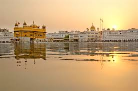
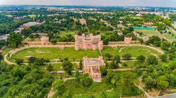
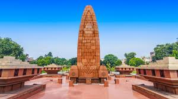

Amritsar

The spiritual and cultural centre of Sikhism, home to the magnificent Golden Temple (Harmandir Sahib), a site of immense peace and beauty.
Wagah Border

Located near Amritsar, this is the site of the famous Beating Retreat Ceremony held every evening before sunset, a ceremonial lowering of the flags by the border forces of India and Pakistan.
Patiala

A city famous for its distinct Patiala Shahi (royal) style, featuring historical palaces, gardens, and the famous Qila Mubarak complex.
Jallianwala Bagh

A historic garden in Amritsar that serves as a memorial of the 1919 massacre, a poignant reminder of India's struggle for independence.
Anandpur Sahib

A holy city of the Sikhs, where the Khalsa (Sikh brotherhood) was founded by Guru Gobind Singh. It features several historical Gurudwaras, including Takht Sri Kesgarh Sahib.